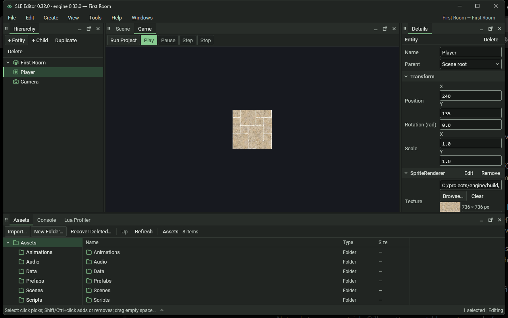
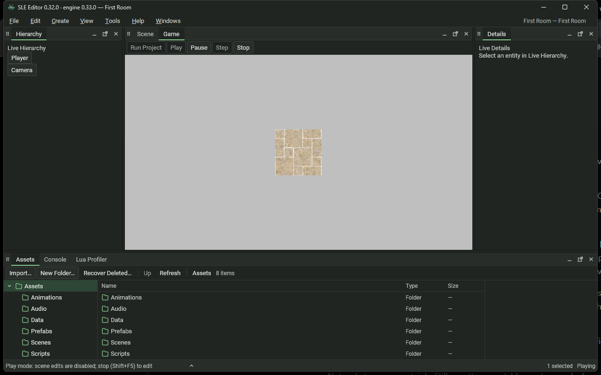

Build your first scene
Create a project called First Room, place a sprite and a camera, then check what the player sees in Game. Start with the editor open from the quickstart.
Create the project and scene
- Choose File → New → Project…, pick a writable parent folder, and name the project First Room. Choose Pixel Art for nearest-neighbor texture filtering. Pick a parent where a First Room folder does not already exist.
- The editor creates
First Room.sleproject, opens an emptyAssets/Scenes/Main.scene.json, and selects Main as the initial startup scene. - Choose File → New → Scene. Select the scene root in Hierarchy and set its Name in Details to First Room. This is the scene you will save and use as the startup scene.
Import an image
In Assets, select Textures and choose Import…. Open the checkout's assets/textures/tile2.png. The image appears in the project under Assets/Textures/. Keep the image and its adjacent .slemeta together so references keep working when you move or share the project.

Create and position Player
- Choose Create → Sprite → At Scene Root. Select the new entity in Hierarchy and set Name to Player in Details.
- In SpriteRenderer, use Browse… beside Texture to select the imported
Assets/Textures/tile2.png. Set Size to X64, Y64world units. - Under Transform, set Position to X
240, Y135. Commit each edit before moving on. Use Fit in Scene if the sprite is outside the current editor view.
Create → Entity starts with a transform. Sprite also adds the renderer, which is why this tutorial starts there.
As Child places a new entity under the selected entity so it inherits the parent's transform. Use At Scene Root for both Player and Camera in this room. If you later reuse a group across scenes, see prefabs and prefab packages.

Frame Player with a gameplay camera
- Choose Create → Camera → At Scene Root and select Camera in Hierarchy.
- In Details, set its Transform position to X
240, Y135. The camera position is the center of its view. - In Camera2D, use view size X
480, Y270, zoom1, and leave the camera enabled. Choose Make Active to set it as the primary camera. In Scene, the camera outline should surround Player.
Save and set the startup scene
- Choose File → Save and save the new scene as
FirstRoom.scene.jsonin the project'sAssets/Scenes/folder. The scene and its metadata sidecar should appear on disk. - Choose File → Project Settings…. Under Startup, open the Startup: … selector, choose the entry for
FirstRoom.scene.json, and click Save. This saves the startup scene's asset UUID toFirst Room.sleproject.
Play and reopen
- With First Room open, choose Edit → Play or press F5. Game should show the 64-by-64 sprite centered in the camera view. Choose Stop to restore the editing scene.
- Close the editor, launch it again, then use File → Open → Project… to select
First Room.sleproject. First Room should open with Player and Camera in Hierarchy and the image still assigned. Press Play again to check the same framing.
The editor restores the last successfully opened or saved project scene. If that scene cannot be opened, it tries the configured startup scene. Edit → Run Project uses the saved startup scene, so you can use it to verify the startup setting separately from Play.

Choose a scene format
Use .scene.json for day-to-day editing in a folder project. Keep the descriptor, asset files, and sidecars with the project so the editor and runtime can resolve UUIDs. Use File → Export Package… to produce a portable .slescene with the referenced assets for sharing or standalone scene work.
Project folders and asset identity · Scene and entity identity · Portable package formats